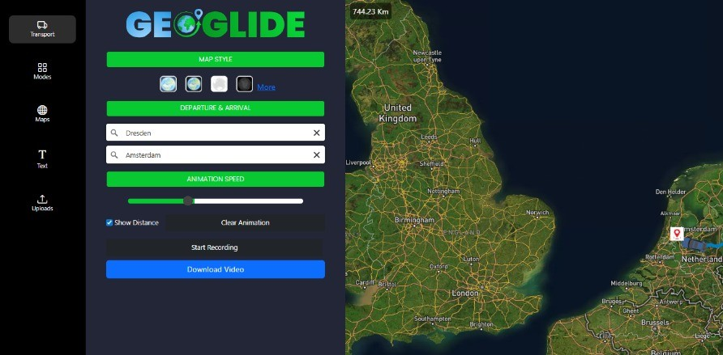
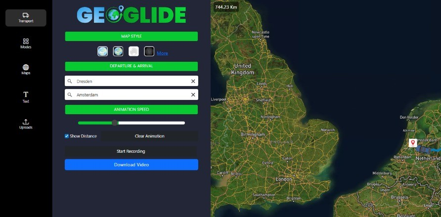

The Concept
Developed for a client, Geoglide is a dynamic web application designed to create smooth, customizable animations for geographic routes. The tool allows users to visualize journeys between locations for different modes of transport, providing an intuitive and engaging way to present spatial movement data. Whether for logistics planning, presenting travel options, or creating educational content, GeoGlide transforms standard routing information into a clear and visually appealing animation.
How It Works & Key Features
- Flexible Routing & Transport Modes: Users can input start and end points to generate a route using the powerful OpenStreetMap (OSM) routing engine. GeoGlide supports various modes of transport (e.g., driving, cycling, walking), allowing for different animations speeds and visual styles tailored to the journey type.
- Customizable Visualization: A key feature is the ability to customize the map's appearance. Users can select from multiple base map styles to best suit the context of their animation, from a standard street view to a more minimalist or dark theme.
- Dynamic Animation Controls: The core of the app is its robust animation engine. Users can control the animation speed, play, pause, and clear the animation. This allows for precise control over how the route is presented, making it easy to highlight specific segments or the entire journey.
- Export & Sharing: To maximize utility, GeoGlide includes a feature to record and download the animation as a video file. Furthermore, users can add text annotations to their animations, providing context, titles, or descriptions directly on the video, making it ready for presentations or reports.
 

The Technology Behind It
- Frontend: The responsive and interactive user interface was built with Vue.js, a progressive JavaScript framework ideal for building sophisticated single-page applications. Mapbox GL JS mapping library was integrated to handle the display of base maps and the drawing of the animated route line.
- Backend: A Node.js server with the Express framework acts as the application's engine. It handles client requests, manages communication with external APIs, and processes data.
- Routing API: The application fetches routing data from the OpenStreetMap Routing API (GraphHopper), which calculates the most efficient path between points for the selected transport mode.
- Animation & Export: The smooth animation of the marker along the route was achieved using JavaScript animation libraries. The video export functionality utilizes the library FFmpeg.wasm to capture the animation frames and compile them into a video file.
In Summary
GeoGlide demonstrates the ability to create specialized, interactive web mapping tools that serve a clear and practical purpose. It showcases expertise in integrating complex geospatial services like routing into a clean, user-friendly Vue.js application, and in solving non-trivial frontend challenges such as smooth animation and video export directly from the browser. This project highlights a focus on full-stack development and creating applications that are both technically sound and visually engaging.
This project is not accessible to the public. For more details of this project, feel free to contact me.